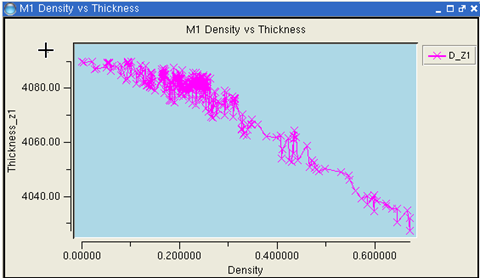
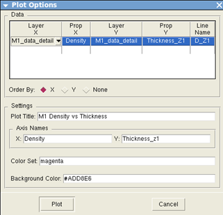

You can plot
the values of one property versus another for a single layer or
across two layers using scatter plots.
Figure 1 shows
an example.
Figure 1. Scatter
Plot
Prerequisites
You
have followed the steps described in “CMP Analysis”, and you have a DFM database
containing the analysis results.
Calibre
RVE for DFM is running and the CMP analysis results are displayed
in the CMP tab.
Procedure
- Choose Tools >
Scatter Plot to open the Plot Options dialog box.
- Click in each column in the
Data table to enter a value. The columns have the following meaning:
Layer X and Prop
X — Specifies the layer and property names to plot on
the x‑axis. The layer names are normally _detail layers.
Layer Y and Prop Y —
Specifies the layer and property names to plot on the y‑axis. The layer
names are normally _detail layers.
Line Name —
Specifies a name for the plot, which is shown in the legend.
- Select a setting for Order
By, which controls how lines are drawn connecting the
data points on the scatter plot.
- In the Settings section, specify
the title of the plot, names for the x‑ and y‑axis, and an optional
color set. Specify one color for each row in the Data table, separated
with spaces. You can optionally specify a background color for the
plot (default is black). Colors are specified as Tk symbolic color
names (green, blue, red, yellow, magenta, cyan …) or RGB hexadecimal
color code such as #D3D3D3 (light gray).
Figure 2 shows an example of the
Plot Options dialog box.
Figure 2. Scatter
Plot Options
- Click Plot to
generate the scatter plot. You can view the values for a particular
data point by moving your mouse over it.
- To save the plot as either
a GIF image or a text file, right-click on the plot and choose Save Plot.